Software Tutorial:
How to De-bloat Windows 10 and 11
The software and instructions in this article will apply to both Windows 10 and Windows 11 operating systems. This document will also assume that you are starting with fresh installation of Windows. If you are looking to de-bloating your existing Windows installation you can skip ahead to Step 4, and follow along from there.
Preface: Why strip down your Windows installation?
Some people may wonder why someone would want to strip down Windows install, and one of the most common reasons is to drastically reduce the number of background processes. This results in a decrease to the overhead required to run the operating system as a whole. This can allow you to continue using older machines when a new version of Windows releases. While this is a nice bonus, for me it’s another reason all together; I believe the devices we purchase should be our own.
We spend any where from hundreds to thousands of dollars on laptops, desktops, tablets and phones to make our lives simpler, safer, and even to do our jobs. While they largely accomplish these, they are also designed to violate your privacy for the purpose of lining the manufacturers wallets further. They have become windows directly into our lives designed to collect our personal information, analyze our behaviors, and to shovel targeted advertisements into our faces.
I believe that removing any amount of software and behaviors designed to do these things is a step toward giving you the privacy everyone deserves.
Step 1: Pre-installation Downloads, and Setup
In order to install Windows you will need installation media, such a USB drive or DVD with Windows on it. This can be acquired in one of two ways; you can purchase a boxed version of Windows from a retailer, or create this media using tools available online. If you already have access to installation media then you can skip ahead to Step 2, or continue following the instructions in this section to create your own installation media, which can include additional installation streamlining features from the stock experience.
Note:
If you create your own installation media you will still need a product key to activate windows. You can purchase activation codes before the installation process, or after the installation by purchasing directly from Microsoft. (I recommend the former, as you are required to use a Microsoft account to purchase a license from inside Windows itself.)
My personal recommendation for how to create your own installation media is by using Rufus, a free and open-source Windows software that can be used to create a boot-able USB drive for many different operating systems. Rufus creates the boot-able USB drive by using the official Windows 10, or Windows 11 ISOs that are available for download directly from Microsoft. Once you have these two things downloaded and USB drive of 8GB or more we can begin.
After launching Rufus, set the Device to the USB drive you wish to use under Device Properties. This drive will be formatted as part of the creation process, so be sure to copy any data you need from this drive to another location before continuing.
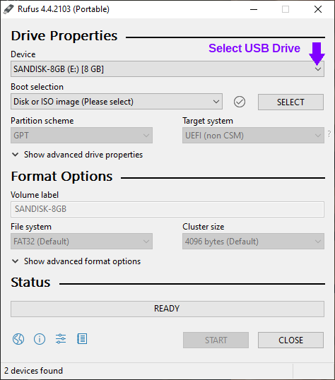Once you’ve made sure that you do not have any data on the drive that you want to keep, click the Select button next to Boot selection drop-down menu, and navigate to where you saved your Windows ISO and open it. The name of the ISO that you selected will appear in the Boot Selection field, this is where you can confirm you have selected the correct file.
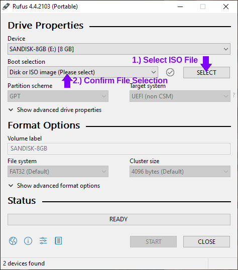In the Format Options section you can enter a name for the drive if you so desire. The remainder of the default options are good to remain as-is. You can now click the Start button and Rufus will give you some additional options depending depending on if you are creating a drive for Windows 10 or 11. After choosing your options the process will begin. This can take some time, so be patient.
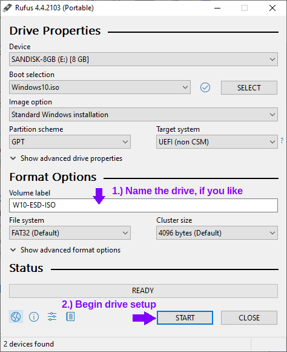 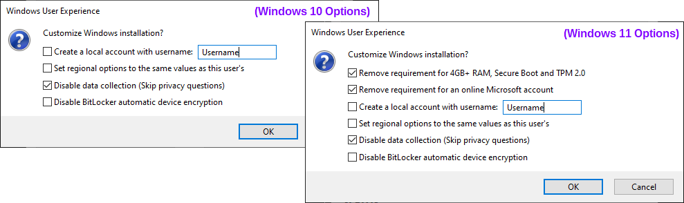
Note:
If you’re planning to install Windows 11 on a computer that supports both Secure Boot and TPM, I recommend leaving those requirements enabled. You don’t need to copy my options exactly, it’s just that my use-case needs these requirements removed.
Once this process is complete you are ready to proceed to installing Windows. Safely remove the drive and proceed.
Step 2: Installing Windows
After the USB drive is plugged into the computer that you plan to perform the install on, you can boot the computer. Assuming that the drives in the system so not already have an operating system installed on them, the computer should boot to the USB stick on it’s own. If it does not then you will need to select the device manually from the boot menu. This menu is accessed differently depending on your devices manufacturer so you will need to look online, or in the manuals that came with your device, for the key to press during start-up to access this menu.
Once you have landed on the Windows Setup page the very first step in de-bloating Windows is to change the “Time and currency format” field to “English (World).” This change prevents the installation of 3rd party Microsoft Store apps due to regional agreements on what software is installed and recommended. From here you can set up your Windows installation as you would normally.
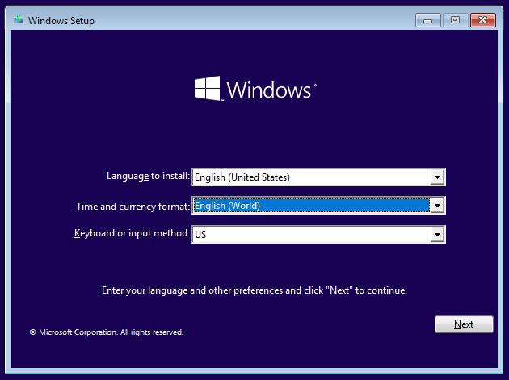Step 3: The “Out-Of-Box Experience” Setup
Once the installation is complete and you begin the “out-of-box experience,” this is where the experience differs depending on which version of Windows you’re installing.
Regardless of experience, if you used Rufus’ Windows User Experience options to disable data collection you will not be see the options for privacy settings. If you are using the standard boot media, then you will be asked to declare your preferences. I choose to opt out of all these settings, however many of these features and functions can be disabled with the post-install de-bloating tools that we will be using.
Windows 10 OOBE
The beginning of the out-of-box experience for Windows 10 lands you on a screen where you will select your region. Making the appropriate selection here will ensure that you have no troubles activating your Windows License. The region and keyboard languages will not affect the whether the installation of third party apps occurs.
When you reach the section to connect to a network I always select the option for “I don’t have internet” it speeds up the initial setup process as it will allow you to set up a local user account, rather than being pushed to set up the computer using a Microsoft account. On the next page you can simply select “Continue with limited setup” in the bottom left corner, and set up your local user account.
Note:
Computers on a wired connection may try to set up the computer with internet automatically, you can prevent this by unplugging the Ethernet cable during the setup process.
Windows 11 OOBE
When the initial page of for the Out-of-Box setup for Windows 11 appears it may take a moment for anything to show. This is because Windows does not know what servers to connect to for the the region “English (World),” once the search times out you will see the error “OOBEREGION,” this is expected. Skip past the error and set up the device how you like.
If you are using the stock Windows installation media and you do not want to use a Microsoft account, or if you do not have an internet connection, then you will need follow the steps below to allow for the creation of a local account.
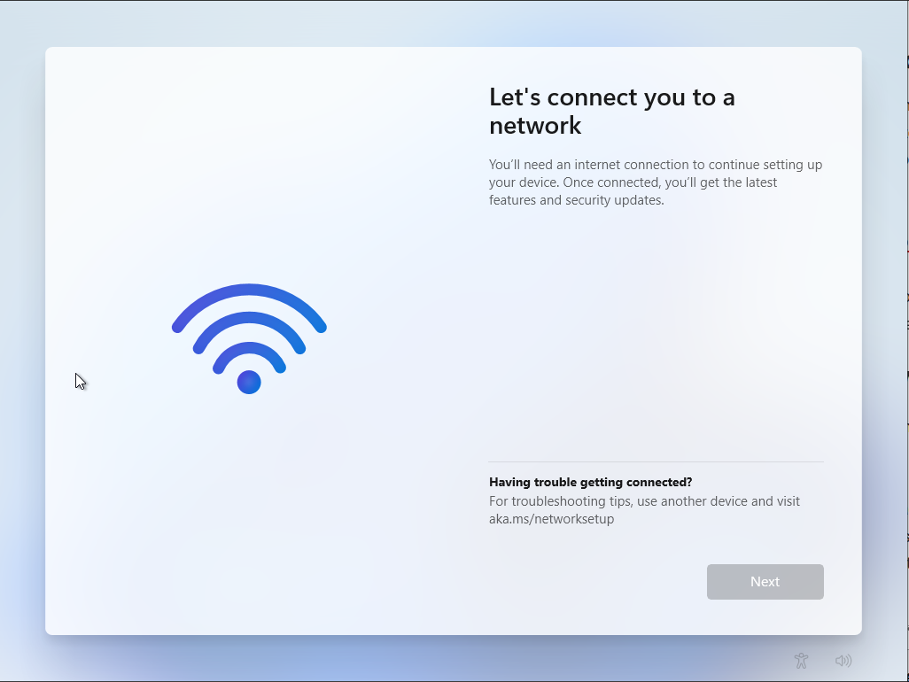Press Shift + F10 to open Command Prompt, and enter the following command and press enter:
OOBE\BYPASSNRO
This will restart your computer, and you will need to start the out-of-box setup over again, which is why we do this immediately. This time when you reach “Let’s connect you to a network” section you will be able to choose “I don’t have internet” at the bottom of the window, and then “Continue with limited setup.” It is then that you will be given the option to make a local account.
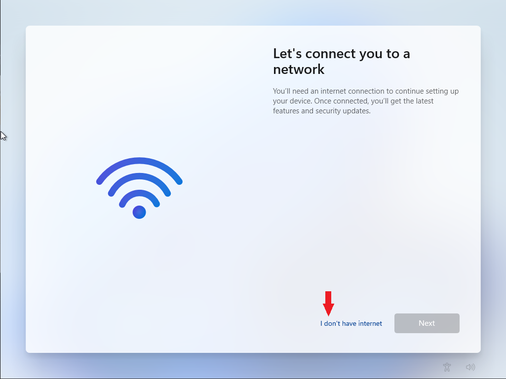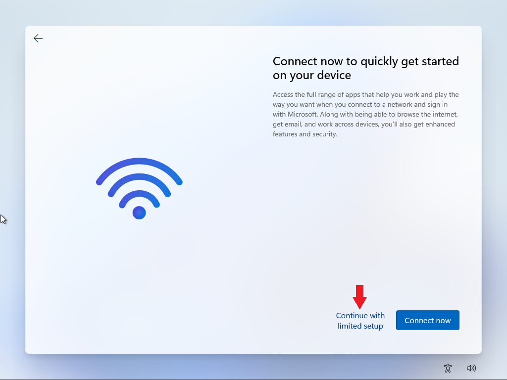
Step 4: Post-Install Preparation
Now that we have made it into Windows proper you should go ahead and connect to your network as there are three things you should do before beginning the process of removing Microsoft’s first-party bloatware. The first step is making sure that your Windows has fully completed the activation process. Second, go through the process of installing your windows updates. And then finally, make sure all your device drivers are installed.
The reason for doing all of this now is that depending on what software you decide to remove, and what tweaks you choose to implement, it is possible to break the Windows activation and/or update services. This could result in having a permanent “Activate Windows” watermark, or prevent you from downloading device drivers from via Windows Update. Besides, if you install all of your Windows updates before stripping out the software you don’t want then you won’t have to worry about the wall of updates coming through later and resetting any of your preferences.
To check and ensure that your activation has been completed on Windows 10, open the Settings window and go to the Update & Security section. The landing page will be for Windows Updates, and on the side bar you can choose Activation to see if the device has been fully activated.
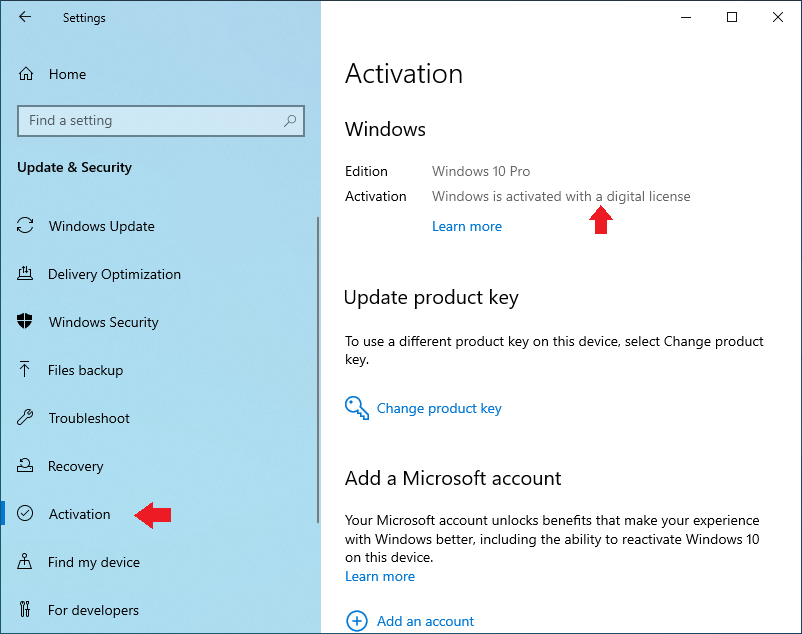For Windows 11 installations, you will first need to change your region so that the computer does not have trouble connecting to the activation server. This will also allow the Windows Store to function should you decide to use it. To get there, open the Settings window and search “Region Settings” and it should be the first option. On the “Language & region” page you should change the option for “Country or region” to your own.
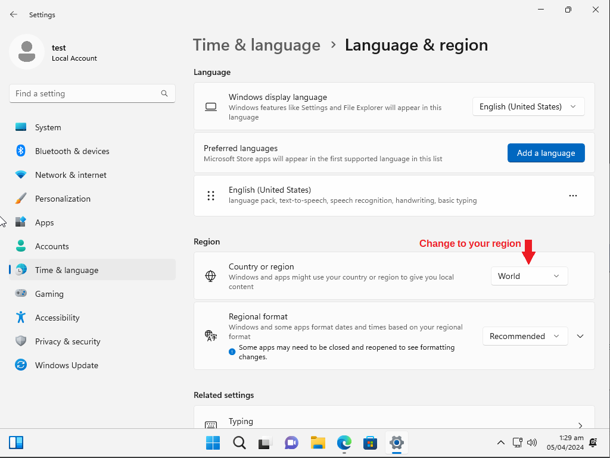Once you've done this, the place to check for activation on Windows 11 is also in settings, but you will select “System”, and then scroll down to click “Activation” to check your status.
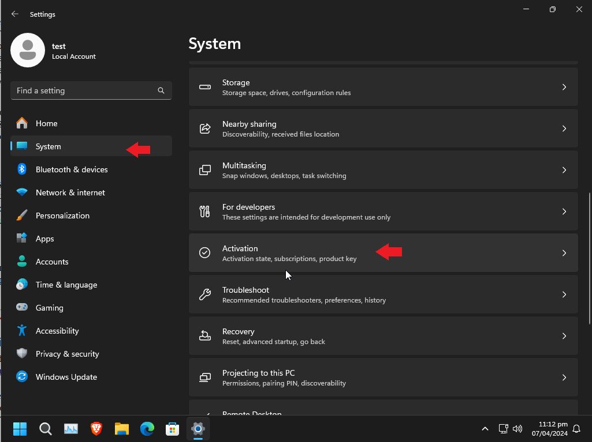And finally, as a reminder before the purge, I recommend you use Edge for it's primary purpose of installing another web browser. If you want to remove Edge that is an option within the next step, however I don't necessarily recommend it as Microsoft had it deeply rooted in the operating system, and some things may break.
Step 5: Let the De-bloating Begin
Chris Titus Tech's Windows Utility
The first tool that I run in the process of stripping down Windows is a free and open-source tool created and maintained by technology YouTuber, Chris Titus Tech. The code, and a detailed breakdown of the usages and features of this software is available on the Windows Utility’s GitHub page if you’d like to check it out. This project has two different ways of running the software; the primary way, running it over the internet using Windows PowerShell (not as scary, or as technical as it sounds), or by supporting the project by purchasing the EXE wrapper at Chris Titus’ Store.
Today, we will be using PowerShell to run the software as it is the method that most people prefer since it’s free, and to show you how simple the process is so that you can be confident in running this software on your own since you may need it again in the future after a Windows update resets your preferences. To run the command required we will be using PowerShell as an administrator. You can right-click the Windows icon on the taskbar and simply select “Windows PowerShell (Admin)”, or search for “PowerShell” and right click the result and select run as an administrator.
Note:
On Windows 11, this option can be called “Terminal (Admin)”, which results in the same outcome.
Once PowerShell is up, it’s a single line to download and run the program, entered as below:
irm https://christitus.com/win | iex
If you have trouble running the software from this source you can try running the code directly from the project’s GitHub as the source.
irm https://raw.githubusercontent.com/ChrisTitusTech/winutil/main/winutil.ps1 | iex
When the software starts a user interface will appear and the PowerShell window will be used to execute the commands for implementing your changes, which is useful if you’d like to review exactly what the software is doing, or if you want to know if it’s done running the commands before moving to the next section. Leave the PowerShell window open until you are finished making changes.
The initial screen, the Install tab, is a collection of software you may be interested in using, and doing so here can be much faster than searching them out yourself on the internet and installing them one at a time. If you attempt to install software from this list, all of the dependencies to do so will need to be installed first and then you may need to restart the computer before packages can be installed. This was the case for me, but I’ve had a friend who was able to install packages right away. This may have been due to a updates to this tool since I last used it.
Moving on to the Tweaks section I tend to use the preset for the type of device that I’m setting up, in this case I am setting up a Desktop. Once you’ve picked the changes you want to implement you can select “Run Tweaks.” This may take a moment to complete depending on your choices. You can watch them in real time if you use Alt+Tab to go back to the PowerShell window. Once this is complete you can move on the “Customize Preferences” section on the right-hand side. These are simple changes that are made as you click them, no confirmation needed.
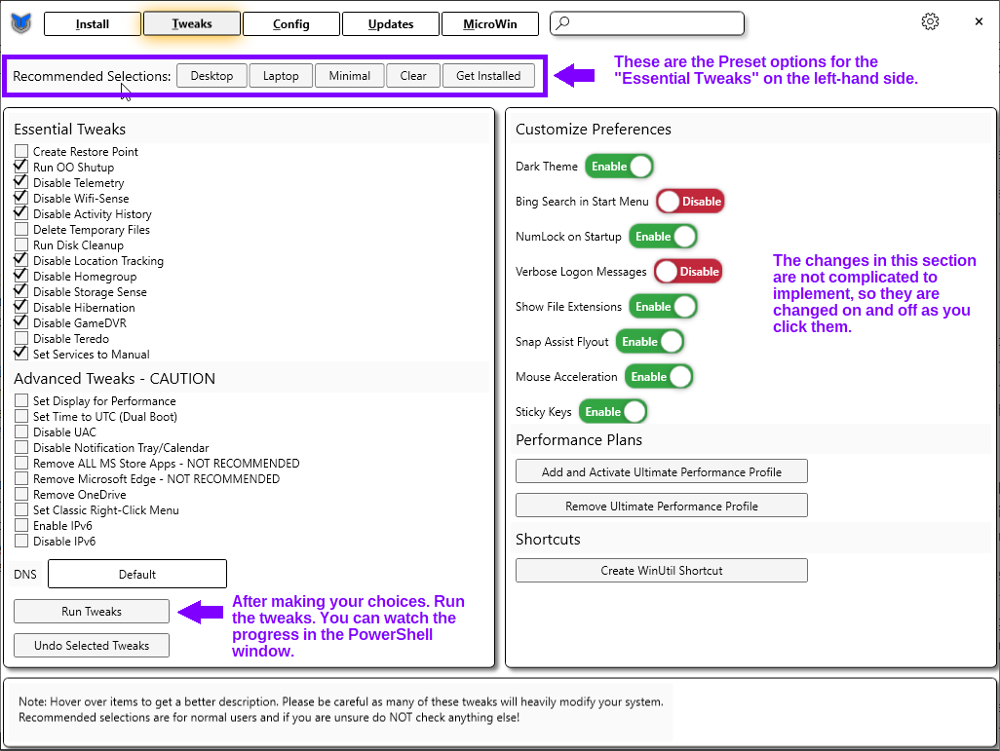The last section that I use is the Updates tab. I use the recommended option to prevent certain types of Windows updates from coming to my computers before all the kinks are worked out, as I prefer stability over new features.
Once you’ve finished making all your changes you can close the window. The PowerShell will remain open, showing you the location of the log file for all the changes made. In order for all changes to take effect you will need to restart the PC.
ThioJoe’s “Appx Uninstaller” Powershell Script
This next tool that I use is made by ThioJoe, another tech YouTuber. This one is useful for uninstalling software packages that are not able to be removed by regular means, such as the “Your Phone” app. This script is available for review and download on GitHub. It is recommend to right click the “Raw” button at the top of code box and select “Save Link As.” If the file name does not end with the file extension “.ps1” then you can add it and save the file.
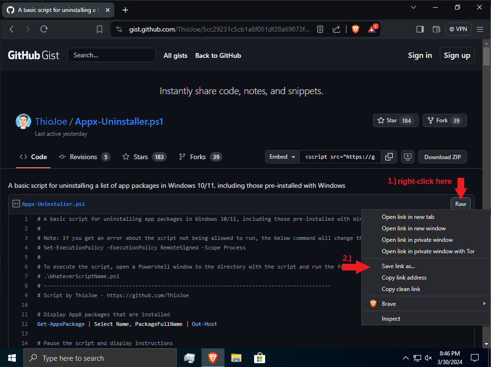 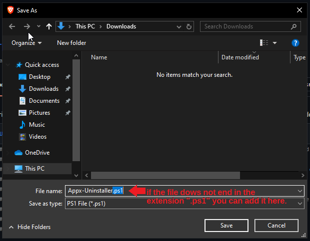Once you have have the PowerShell script downloaded we can begin. The first step is opening up a new PowerShell window. The first command we will enter is to allow the current session of Windows PowerShell to run script files. You will be asked to approve this change, enter Y to approve.
Set-ExecutionPolicy -ExecutionPolicy RemoteSigned -Scope Process
Next, we will set the directory of PowerShell to your Downloads folder. This is so that the script will know where to locate the list of applications that you want to uninstall in a future step. If your file is in another location, such as your Desktop then the link should be changed accordingly.
cd $home/Downloads
or,
cd $home/Desktop
After all that we are ready to run the script file. Again, you will need to confirm that you would like to run this script by entering “R” or “A”.
.\Appx-Uninstall.ps1
Once the initial code is run it will create a list of the packages installed on the system. The script will wait for you to tell it to continue, which we will do after using this list to create a file telling the script which of these packages you would like to uninstall.
To create this list you can right click in your Downloads folder, mouse over “New,” and select “Text Document.” You should name this file "list.txt". Open this file and copy the names of the packages that you want to uninstall from the list in the PowerShell window. Each entry should be on it’s own line.
Note:
Some of these packages are important Windows processes, and should not be installed. When in doubt search the internet for the package name to find out what it correlates to.
Below I’ve listed the apps that I choose to uninstall using this tool. Please be sure to go over this list, as there are a number of apps I uninstall specifically because I already have replacement software in-mind.
Personal List for Windows 10
- Microsoft.Microsoft3DViewer
- Microsoft.WindowsCamera
- Microsoft.WindowsFeedbackHub
- Microsoft.WindowsMaps
- Microsoft.MixedReality.Portal
- Microsoft.MicrosoftOfficeHub
- Microsoft.Office.OneNote
- Microsoft.People
- Microsoft.Windows.Photos
- Microsoft.SkypeApp
- SpotifyAB.SpotifyMusic
- Microsoft.WindowsSoundRecorder
- Microsoft.BingWeather
- Microsoft.YourPhone
- Microsoft.ZuneVideo
- Microsoft.ZuneMusic
- Microsoft.Getstarted
- Microsoft.GetHelp
Personal List for Windows 11
- Microsoft.Getstarted
- Microsoft.ZuneMusic
- Microsoft.Todos
- Microsoft.ZuneVideo
- Microsoft.YourPhone
- Microsoft.WindowsMaps
- Microsoft.WindowsFeedbackHub
- Microsoft.WindowsCamera
- Microsoft.Windows.Photos
- Microsoft.People
- Microsoft.MicrosoftOfficeHub
- Microsoft.GetHelp
- Microsoft.BingWeather
- Microsoft.BingNews
- Clipchamp.Clipchamp
- MicrosoftTeams
- Microsoft.Windows.Ai.Copilot.Provider
- Microsoft.549981C3F5F10
- Microsoft.Windows.NarratorQuickStart
- Microsoft.Windows.PeopleExperienceHost
- microsoft.windowscommunicationsapps
Once you have finished creating your list, save and close the file, and then in the PowerShell window press any key to continue. Once this has finished running, you can manually uninstall any apps that you were not able to find on the list.
Note:
My additional uninstalls for Windows 10: Calendar, Cortana, ClipChamp, LinkedIn, Mail, Microsoft To Do, Paint 3D, OneDrive, and Xbox.
My additional uninstalls for Windows 11: Calendar, Cortana, Mail, OneDrive, and Xbox.
The End(?)
Personally, this is the end of what I normally do remove a lot of the “features” and software Microsoft includes in Windows 10 and 11 that I do not use. From here I move on to other tools for implementing changes that focus more on enhancing the privacy and security of the operating system. These changes are outside the scope of this document so I don’t plan to go on about them here, but I do plan to publish another document in the future featuring some of these tools as well.
If you have recommendations for other tools that accomplish similar goals, or streamline the process, feel free to recommend them to me. I’m always curious to check them out. As always thank you for reading, and I hope you found this helpful.
Until next time,